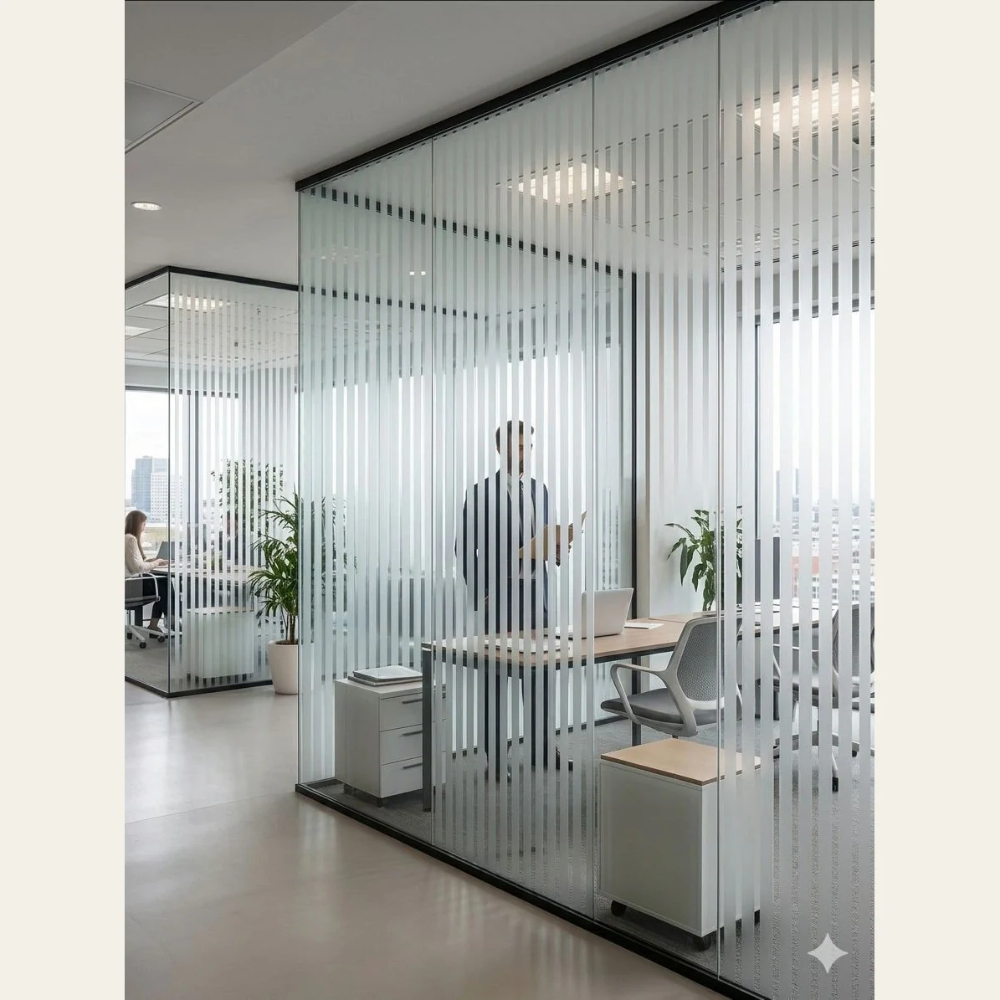

Presentacion ambientadaEsmerilado electrostático
Esmerilado Electroestàtico Para Vidrios, Ventanas 0,6x5m - Lineas
Marca DIFAN DECOCódigo HYTK2029
Película decorativa para aplicar sobre vidrio, según el método indicado por el proveedor. Permite elegir el acabado de esta ficha y revisar medidas y colocación antes del pedido.
Datos del proveedor: Medidas: 0,60 m de ancho × 5 m de largo. Material: PVC de alta calidad. Espesor: superior al vinilo común.
- Medidas
- 0,60 m de ancho × 5 m de largo
- Cobertura por rollo
- 3 m²
- Material
- PVC de alta calidad
- Espesor
- superior al vinilo común
- Tipo de adhesión
- electroestática (sin pegamento)
- Apto exterior
- no
- Superficies compatibles
- solo vidrio liso y limpio
Disponibilidad FORMA: Consultar
Consultar precio
Consultar por WhatsAppConfirmamos precio, disponibilidad y entrega antes de cerrar el pedido.